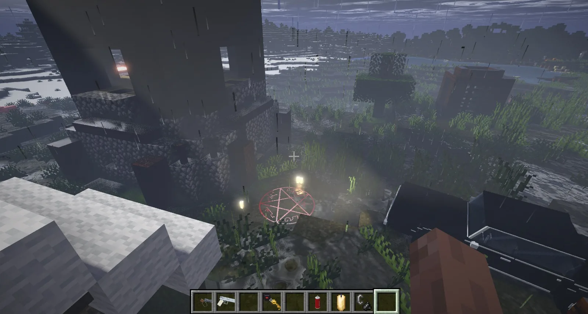
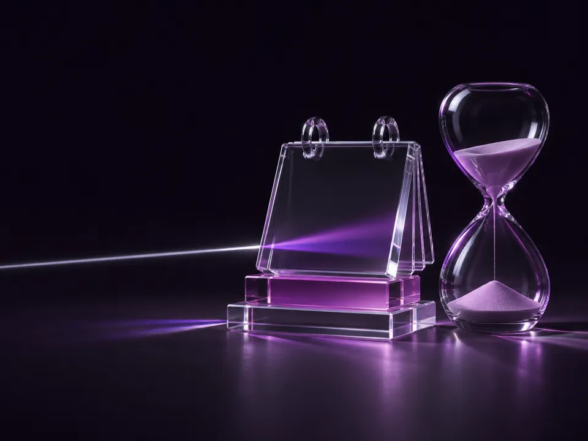
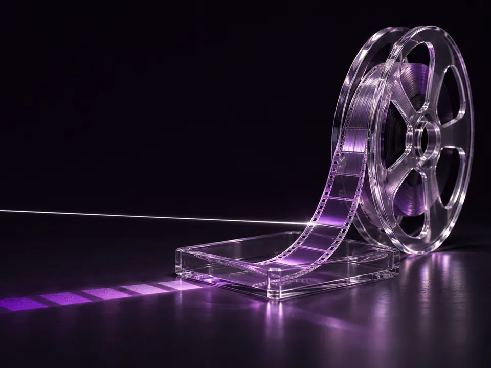

One lab, seventeen projects.
We build tools that make AI use efficient and cut its cost. And some games and apps.
Explore VerinodaWhat we make
All of them public.
Tools
Games and mods
- SupernaturalENGMinecraft modEarly Access 0.1
- Kansas-caelesteMap
- Angel Wings (AngelRanks)Minecraft plugin and modelsHobby prototype; the 3D wing design was shelved as a mod, the models are an archive/prototype
- Angel Wings 3D3D model and viewerFan-made and unofficial; the .bbmodel file was not opened and tested in Blockbench
- Zombie Survival (Roblox)Roblox gamePrototype stage; no published Roblox experience exists
Apps
- DersTakipCODesktop app
- WebcordWeb app
- Microphone BridgeWeb app
- Talk BuddyMobile appBeta 0.9.0; not a diagnostic tool and no substitute for a specialist's assessment
- MidnightSunWindows desktop appVersion 1.0.0; per the README, end-to-end streaming between two computers was not tested separately
- EBA Biology MapWeb appIndependent educational tool, not affiliated with MEB/EBA; the topic structure was prepared by hand and may contain errors
- Video Downloader and Format ConverterDesktop appVersion 1.4.0
Developer tool
Verinoda
Evidence-first code intelligence for coding agents. Every answer is a claim, every claim a file:line.
The journey of a question
- Question
You ask in plain words.
From the command line, or from a coding agent such as Claude Code or Codex; in English or Turkish.
- Index
The repository is indexed on your machine.
Indexing uses the AST and no LLM. What is in which file is worked out on your machine.
- Claims
The answer is made of claims.
Each claim points to a file and a line. You can open the line and read it yourself.
- Status
Every claim has a status.
“Verified” is never mixed up with “probably”. Next to each uncertain line, the reason is written.
- Decision
What to do is your decision.
The tool does not recommend. It brings what the code says and the questions it needs from you.
We measured. It did not always go our way.
We publish Verinoda's measurements with their result folders and methods. Without a model we lead; in sessions with a model in the loop, no study so far shows it improving the agent's outcome.
2.53
facts / 1,000 tokens
No model: Verinoda's query, across eight public sets and 86 questions, against Graphify's 0.58 and plain search's 0.38.
72 = 72
SWE-bench Lite, 100 tasks
Model in the loop: Sonnet 5.5 resolved 72 tasks in both arms. The Verinoda arm cost about 60% more dollars.
0 / 126
seL4 sessions
The agent never called Verinoda in the seL4 study, nor in 160 sessions on home-assistant.
Minecraft mod
From inside a game
SupernaturalENG has its own shader. Compare off and balanced on the same frame.


- 12firearms
- 66seals
- 20+rituals
- 3extra dimensions
Apps
- DersTakipCODesktop appAn offline lesson, student and income tracker for private tutors.

Illustration - WebcordWeb appAccountless voice and text chat. A nickname and a room code are enough; audio flows browser to browser.
 Illustration
Illustration - Microphone BridgeWeb appStreams a phone or computer microphone live to a Bluetooth speaker.
 Illustration
Illustration - Talk BuddyMobile app · Beta 0.9.0; not a diagnostic tool and no substitute for a specialist's assessmentA voice-first, errorless, game-like learning app for children who need support with speech and language development.
 Illustration
Illustration - MidnightSunWindows desktop app · Version 1.0.0; per the README, end-to-end streaming between two computers was not tested separatelyLow-latency game streaming for Windows: NVENC, a custom UDP protocol (GSMR), Opus audio and a keyboard, mouse and gamepad back-channel.
 Real screenshot
Real screenshot - EBA Biology MapWeb app · Independent educational tool, not affiliated with MEB/EBA; the topic structure was prepared by hand and may contain errorsA web app that shows grade 9–12 topics as an interactive neural network, with prerequisites, MEB sample exams and source links.
 Real screenshot
Real screenshot - Video Downloader and Format ConverterDesktop app · Version 1.4.0A four-tab desktop app: it downloads video and audio, converts file formats, repairs unfinished recordings and brings a microphone voice forward.

Illustration
Let's talk.
For teams, partnerships, press and research: tell us what you are building and where you get stuck. We read every message.